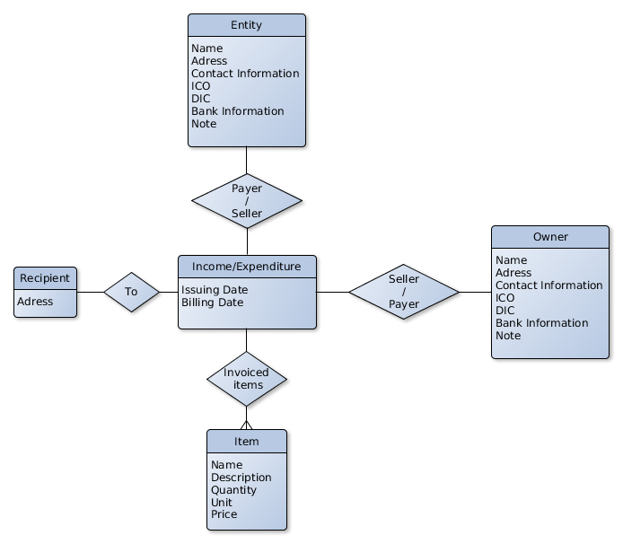

eXist-db (or eXist for short) is an open source software project for NoSQL databases built
on XML technology.
It is classified as both a NoSQL document-oriented database system and a native XML database
(and it provides support for XML, JSON, HTML and Binary documents). Unlike most relational
database management systems (RDBMS) and NoSQL databases eXist provides XQuery and XSLT as its
query and Application programming languages.
For web -> exist-db.org
For github -> exist-db git
Database layer uses eXist-db as it's native XML database with eXist being started in embedded mode. eXist is used for data storage in xml form as well as it's validation using provided schema.
Invoices are stored within a database as records with every invoice being represented as a single record. Every record contains list of invoices, invoice information, shipping address and information about entity. Depending on type of invoice (expanse, revenue), the entity is interpreted as either the payer or seller and contains bank, identification, name, address and contact information. Owner information are stored separately from the records as the owner (user) is expected to be part of every provided invoice.
Records themselves are represented as objects with provided getter and setter function for given atribute. Invoice items are represented as separe objects kept within each record. These records can then be static or dynamic. Changes to static records do not reflect on database while dynamic do. For some transaction control the Database provides commit and rollback functionality.
Database consistency is insured with XML validation both within the eXist-db as well as within the Database class. However it only enforces the format necessary for the database (including types) and leaves more specific content format upper layers.
For exporting invoices into PDF the Database provides several output formats of the database contents. For calculating earnings and losses it provides getters in range as well as sum using XQuery.